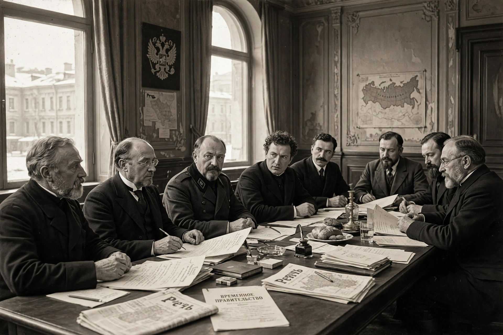

| Russian Provisional Government | |
|---|---|
| Formation | 15 March 1917 (N.S.) |
| Dissolved | 7 November 1917 (N.S.) |
| Capital | Petrograd |
| First head | Prince Georgy Lvov |
| Last head | Alexander Kerensky |
| Preceded by | Russian Empire (Council of Ministers) |
| Succeeded by | Council of People's Commissars |
The Russian Provisional Government was a provisional government of Russia established immediately following the abdication of Tsar Nicholas II during the February Revolution of 1917. It governed the Russian Republic from March to November 1917, when it was overthrown by the Bolsheviks in the October Revolution.
The government was formed by the Provisional Committee of the State Duma under Prince Georgy Lvov. From the outset it shared authority — the condition known as "dual power" — with the Petrograd Soviet of Workers' and Soldiers' Deputies, whose Order No. 1 undermined the government's control of the armed forces.
The government introduced civil liberties, abolished the death penalty (later restored at the front), and promised elections to a Constituent Assembly, but it continued Russia's participation in the First World War and postponed land reform. A failed June offensive, the July Days uprising, and the Kornilov affair in August progressively destroyed its authority. Lvov resigned in July 1917 and was succeeded by his war minister, Alexander Kerensky, who proclaimed the Russian Republic on 14 September.
On 7 November 1917 (25 October, Old Style) Bolshevik Red Guards seized key points in Petrograd and stormed the Winter Palace, arresting the government's ministers; Kerensky fled. Power passed to the Council of People's Commissars under Vladimir Lenin.